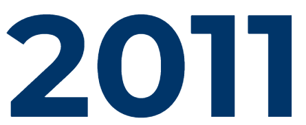

기업 소개
즐거움으로 연결된
새로운 세상, 엔씨소프트
세상 모두가 즐거움으로 연결되는 새로운 미래,
아무도 가보지 못한 그 세상이 감동으로 가득 찰 때까지
엔씨는 끊임없이 꿈꾸며 도전을 멈추지 않을 것입니다.
- HOME
- WHO WE ARE
기업 소개
| 기업명 | NCSOFT | 대표이사 | 김택진 |
|---|---|---|---|
| 설립일 | 1997.03.11 | 업종 | 문화 컨텐츠 |
| 본사소재 | 경기도 성남시 분당구 대왕판교로 644번길 12 (우)13494 |
CEO'S MESSAGE
엔씨는 즐거움의 미래를 열기 위해 새로운 세계를 상상하고
기술의 혁신을 거듭하며 오직 엔씨만이 갈 수 있는 길에 집중했습니다.
세상 모든 이들이 즐거움으로 연결될 때까지 끊임없이 도전하고 꿈꾸겠습니다.
CEO/CCO 김택진
걸어온 길
경계를 넘어서
BEYOND
BORDERS
- HOME
- WHO WE ARE
-
리니지W 출시
블레이드 & 소울2 출시
엔씨소프트, 첫 지속가능경영보고서 'NC ESG PLAYBOOK'발간
트릭스터M 출시
AI 야구 앱 페이지(PAIGE), iF 디자인 어워드 본상 수상
프로야구 H3 출시
ESG 경영위원회 신설
사내 어린이집 소개한'웃는땅콩 이야기'출간
케이팝 엔터 플랫폼 유니버스 출시
캐릭터 브랜드 도구리 출시
-
엔씨소프트서비스, 2020 올해의 편한 일터 고용노동부 장관상 수상
엔씨(NC), ‘오픈체인 프로젝트’ 표준 준수 국제 인증 획득
엔씨소프트 웹사이트, 웹어워드코리아 2020 게임분야 대상 수상
2020 잇어워드 브랜드아이덴티티 부문 대상 수상 / it Award Design Leader's Choice 2020
엔씨소프트 웹사이트, 2020 GDWEB DESIGN AWARDS IT기업 부문 GRAND PRIZE 수상
엔씨소프트, 제6회 2020 올해의 SNS 올해의 블로그 기업부문 대상 수상
아이온 클래식 출시
엔씨소프트, 제13회 대한민국소통어워즈 공감콘텐츠대상 종합대상 수상
FUSER 북미•유럽 출시
-
리니지2M, 이달의 G-rank 시상식 이달의 게임상 수상
엔씨소프트, 제2회 납세자축제 납세대상 수상
크로스 플레이 서비스 퍼플 출시
리니지2M 출시
엔씨소프트, 제28회 강남구민의 상 모범납세상 법인 부문 수상
엔씨소프트서비스, 자회사형 장애인 표준사업장 인증 획득
엔씨소프트, 2019 Great Company Award 글로벌경쟁력 부문 수상
길드워2, TechRadar 'The Best MMOs of 2018'로 선정
아이온 레기온즈 오브 워 출시
엔씨소프트, 개인정보보호 프레임워크 국제인증(ISO/IEC 29100) 획득
엔씨소프트, 정보보안 관리체계 국제인증(ISO/IEC 27001) 획득
-
엔씨소프트, 2018 Great Company Award 고속성장 부문 수상
엔씨소프트, 2018 Great Company Award 일자리창출 부문 수상
웹툰·웹소설 콘텐츠 플랫폼 버프툰 출시
캐릭터 브랜드 스푼즈 출시
-
리니지M, 2017 G-Rank 서울 모바일 화제성 부문 수상
길드워2, MMORPG ‘The best of the best’로 선정
아라미 퍼즈벤처 출시
리니지M 출시
엔씨소프트, 2017 Great Company Award 건실경영 부문 수상
엔씨소프트, 제51회 납세자의 날 국세 일천억원 탑 수상
엔씨소프트 사내 어린이집 웃는땅콩, 국제표준화기구 외국어 학습 서비스 인증(ISO29991) 획득
엔씨소프트 사내 어린이집 웃는땅콩, 국제표준화기구 학습서비스 경영시스템 인증(ISO 29990) 획득
-
리니지 레드나이츠 출시
NC문화재단, 2016 G-Rank 서울 특별상 심사위원 부문 수상
NC문화재단, 제11회 대한민국 인터넷대상 국무총리상 수상
NC문화재단, 2016 대한민국 게임대상 특별상 수상
NC문화재단 나의 AAC, 휴먼테크놀로지 어워드 2016 대상 수상
엔씨소프트 사내 어린이집 웃는땅콩, 보건복지부 어린이집 평가인증 만점 획득
NC문화재단, 문화체육관광부 장관 표창 수상
-
길드워2, Ten Ton Hammer ‘Game of the Year 2015’로 선정
엔씨소프트, 2015 한국의 경영대상 Dominant of the Value 부문 혁신역량 최우수기업 수상
블레이드 & 소울, 2015 G-Rank KOREA 특별상 마케팅 부문 수상
블레이드 & 소울, 2015 G-Rank KOREA 본상 PC(온라인) 작품성 부문 수상
엔씨소프트, 큐더스IR연구소 '2015 상장기업대상 Best IR 우수기업'으로 선정
엔씨소프트, 한국능률협회컨설팅 '2015년 한국에서 가장 존경받는 30대 기업'으로 선정
-
엔씨소프트, 정보보호 관리체계 인증(ISMS) 획득
리니지, 산업정책연구원 '온라인게임 부문 2014 수퍼브랜드'로 선정
엔씨소프트 판교 R&D센터, 2014 한국건축문화대상 준공 부문 우수상 수상
엔씨소프트 판교 R&D센터, 제19회 경기도건축문화상 비주거 부문 대상 수상
엔씨소프트, IT 서비스 관리체계 국제인증(ISO/IEC20000) 획득
-
엔씨소프트, 2013 사랑나눔 사회공헌대상 콘텐츠, 정보기술 부문 대상 수상
리니지, 산업정책연구원 '온라인게임 부문 2013 수퍼브랜드'로 선정
판교 R&D센터 완공
와일드스타, MMORPG 'Most Wanted MMOs of 2013' 1위로 선정
길드워2, PC Games '최근 20년간 최고의 RPG(Die besten Online-Rollenspiele)' 1위로 선정
블레이드 & 소울·길드워2·리니지 이터널, WGGC 2013 '중국 10대 온라인 게임 기대작'으로 선정
엔씨 아이액션북 '우리동네 곤충친구', Parents’ Choice Award 2013 모바일 앱 부문 금상 수
엔씨 아이액션북 '숲에서 만난 곤충', 아시아 스마트폰 앱 콘테스트 2012/2013 Games and Edutainment 부문 은상 수상
와일드스타, PAX East 2013 어워드 가장 혁신적인 게임상(Most Innovative) 수상
진 작룡문 출시
-
미국 법인 NC West 설립
길드워2, IGN ‘Best PC Graphics of 2012’로 선정
길드워2, Time 'Best Game of 2012'로 선정
블레이드 & 소울, 2012 대한민국 게임대상 기술·창작상 게임캐릭터 부문 수상
리니지, 산업정책연구원 '온라인게임 부문 2012 수퍼브랜드'로 선정
길드워2 출시
블레이드 & 소울 출시
NC문화재단 설립
엔씨소프트 김택진 대표, 대한민국 인터넷 30주년 기념식 공로상 수상
게임회사 ㈜엔트리브소프트 인수
- 
-
아이온, 제1회 아시아 온라인게임 어워드 한국 최고 인기 온라인게임상 수상
아이온, 제1회 아시아 온라인게임 어워드 최고 크리에이티브상 수상
아이온, 제1회 아시아 온라인게임 어워드 대상 수상
엔씨소프트, 벤처1,000억기업 수익성 부문 우수기업상 수상
엔씨소프트서비스, 한국능률협회컨설팅 선정 2011년 KSQI 콜센터 부문 인증 획득
프로야구단 NC 다이노스 창단
-
엔씨소프트, 제9회 정보보호대상 우수상 수상
길드워2, Gamescom 2010 최고 온라인 게임(Best Online Game) 수상
엔씨소프트, 개인정보보호 관리체계 국제인증(BS10012) 획득
-
엔씨소프트 김택진 대표, 제3회 언스트앤영 최우수 기업가상 엔터테인먼트 부문 수상
엔씨소프트, 제2회 한국문화산업 대상 수상
아이온, PAX 2009 최고 MMO 게임(Best MMO) 수상
아이온, Gamescom 2009 최고 온라인 게임(Best Online Game) 수상
㈜엔씨소프트서비스, 계열회사로 추가
-
아이온, 2008 대한민국 게임대상 대상 수상
2008 올해의 인터넷기업상 특별상(웹2.0) 부문 수상
엔씨소프트, 2008 올해의 인터넷기업상 게임 부문 수상
아이온 출시
엔씨소프트 삼성동 R&D센터, 제26회 서울특별시 건축상 장려상 수상
엔씨소프트 삼성동 R&D센터, 2008 한국건축문화대상 준공 부문 우수상 수상
삼성동 R&D센터 완공
엔씨소프트, 정보보호 안전진단 필증 획득
-
리니지, 웹어워드 코리아 2007 문화/레포츠 부문 게임/스포츠 분야 대상 수상
엔씨소프트 김택진 대표, 2007 대한민국 문화콘텐츠 해외진출 유공자 대통령 표창 수상
엔씨소프트, 2007 올해의 인터넷기업상 해외진출 부문 수상
리니지, 산업정책연구원 '온라인게임 부문 2007 수퍼브랜드'로 선정
엔씨소프트 김택진 대표, 제41회 납세자의 날 기획재정부 장관 표창 수상
엔씨소프트, 정보보호 안전진단 필증 획득
-

-
리니지, 웹어워드 코리아 2006 게임 분야 최우수상 수상
엔씨소프트, 2006 대한민국 게임대상 사회공헌우수기업상 수상
리니지, 산업정책연구원 '온라인게임 부문 2006 수퍼브랜드'로 선정
길드워, GameAmp 최우수 PvP(Best PvP) 수상
아이온, GameAmp 최우수 그래픽(Best Graphics) 수상
엔씨소프트, GameAmp 최우수 부스(Best Booth) 수상
아이온, STRATICS The Golden Cogs 최우수 그래픽(Best Graphics) 수상
길드워, AIAA 온라인 게임 부문 1위 수상
엑스틸 출시
엔씨소프트, 정보보호 안전진단 필증 획득
-
엔씨소프트, 산업자원부 선정 세계일류상품 생산기업 정식 인증 획득
길드워, 2005 대한민국 게임대상 기술/창작상 그래픽 부문 수상
리니지2, 2005 대한민국 문화콘텐츠 수출대상 수상
리니지, 웹어워드 코리아 2005 엔터테인먼트 분야 대상 수상
길드워, 2005년 디지털콘텐츠대상 대상 수상
리니지, 산업정책연구원 '온라인게임 부문 2005 수퍼브랜드'로 선정
엔씨소프트, 동아일보·한국IBM BCS '2005년 존경받는 30대 한국 기업'으로 선정
길드워 출시
길드워, 2005년 2분기 디지털콘텐츠대상 온라인게임 분야 수상
엔씨소프트, 정보보호 안전진단 필증 획득
엔씨소프트, RPG Vault 'Developer/Publisher of the Year'로 선정
-
엔씨소프트, 웹어워드 코리아 2004 게임 부문 우수사이트 수상
리니지2, 웹어워드 코리아 2004 게임 부문 대상 수상
리니지, 산업정책연구원 '론라인게임 부문 2004 수퍼브랜드'로 선정
엔씨소프트, 한국생산성본부 '2004년 국가고객만족지수 MMORPG 부문 1위'로 선정
-
리니지2, 2003 대한민국 게임대상 기술/창작상 그래픽 부문 수상
리니지2, 2003 대한민국 게임대상 대상 수상
엔씨소프트, 제4회 정보통신기업 디지털대상 대통령상 수상
리니지2 출시
엔씨소프트, 한국정보통신산업협회 '개인정보보호 우수업체'로 선정
대만 법인 NC Taiwan 설립
유가증권시장 이전 상장
리니지2, Gamers’ Pulse 베스트 오브 쇼(Best of Show) 수상
엔씨소프트, IGN 최고 부스(Best Booth) 수상
길드워, IGN 슬리퍼 히트(Sleeper Hit) 수상
엔씨소프트, 제2회 공정거래의 날 공정거래위원장 표창 수상
-
미국 게임회사 ArenaNet 인수
엔씨소프트, 2002 대한민국 게임대상 수출상 수상
엔씨소프트, 제3회 정보통신기업 디지털대상 정보통신부 장관상 수상
리니지, 2002 대한민국 문화콘텐츠 수출대상 수상
엔씨소프트 김택진 대표, 한국과학문화재단 '닮고 싶은 과학기술인'으로 선정
엔씨소프트 김택진 대표, Businessweek '세계 e비즈 영향력 있는 25인'으로 선정
-
엔씨소프트 김택진 대표, 문화관광부 장관 표창 수상
엔씨소프트, 정보통신부 '2002년도 유망 중소정보통신기업'으로 선정
엔씨소프트, 올해의 정보통신중소기업 대상 수상
엔씨소프트 김택진 대표, 소프트엑스포 ＆ DCF 2001 S/W산업발전 유공자 산업포장 수상
엔씨소프트, 산업자원부 선정 2001년 차세대 세계일류상품 인증 획득
엔씨소프트, 제1회 한국IR대상 우수상 수상
엔씨소프트 김택진 대표, Far Eastern Economic Review '변화를 주도할 인물'로 선정
일본 법인 NC Japan 설립
엔씨소프트 김택진 대표, Businessweek '아시아의 스타'로 선정
엔씨소프트, 제2회 정보통신기업 디지털대상 국무총리상 수상
㈜엔씨아이티에스, 계열회사로 추가
-
미국 법인 NC Interactive 설립
코스닥 등록
-
리니지, 1998 대한민국 게임대상 대상 수상
리니지 출시
-
(주)엔씨소프트 설립
가치와 목표
엔씨가 꿈꾸는 미래는 물리적인 시공간의 제약을 넘어 모두가
즐거움으로 연결되는 무한한 가능성의 세계
끈임없는 도전으로 그 세계를 창조해 나가는 엔씨의 진지함과 열정을 보여주는 새로운 방식
WINDOW TO THE FUTURE
- HOME
- WHO WE ARE
CORE VALUE
-
INTEGRITY
퀄리티를 향한 진정성
끈임없이 고민하고 다듬는 과정이 퀄리티를 만듭니다.
사람들을 감동시킬 때까지 진지하게 임합니다.
-
PASSION
새로운 시도를 멈추지 않는 열정
우리에게 실현 불가능한 세계는 없습니다.
창의를 향한 헌신과 열정으로 무한한 세계를 창조합니다.
-
NEVER-ENDING-CHALLENGE
즐거운 세상을 만들기 위한 끈임없는 도전
미래는 새로운 생각에서 출발합니다.
즐거움으로 연결된 세상을 만들기 위해 도전을 멈추지 않습니다.
지속가능경영
PUSH FOR A BETTER FUTURE
PLAY FOR SUSTAINABILTY
- HOME
- WHO WE ARE
NC ESG 거버넌스
엔씨는 '즐거움으로 연결된 새로운 세상'을 목표로 사회의 질적 성장에 기여하고
다양한 이해관계자들에게 즐거움을 선사하고자 합니다.
이를 위해 ESG경영위원회를 중심으로 워킹그룹을 구성해 체계적으로 지속가능경영을 추진해 오고 있습니다.
PLAY for Sustainability
엔씨는 올바르고 진정성 있는 방식으로 지속가능한 사회를 만들어 나갑니다.
-
건강한 조직 문화,
편견 없는 즐거움엔씨는 콘텐츠 안과 밖에서 보다 폭넓게
다양성을 포용하고자 합니다.
우리 구성원의 다양성을 존중하고
이를 통해 누구나 공감할 수 있는 콘테를 제작해
모두가 즐거운 세상으로 이끌어 나갑니다.
-
신뢰할 수 있는 글로벌 서비스 환경
엔씨는 글로벌 정보보안체계를 구축하여
언제 어디서나 안전하게 서비스를 이용하고
콘텐츠를 즐길 수 있도록 합니다.
-
선도적 기술개발과 윤리적 가치
엔씨는 첨단 기술에 윤리를 더해
디지털 시대의 책임을 다하고자 합니다.
AI 기술이 '인간 중심의 AI'로 지속 성장하기 위해
원칙을 제정하고 이를 기술 개발 및 운영 과정에
반영될 수 있도록 합니다.
-
미래세대 기회 부여
엔씨는 우리의 미래세대에게
창의적 경험의 기회를 선사하고자 합니다.
미래의 주역인 아이들이 자유롭게 상상하고
도전할 수 있도록 '프로젝토리'와 더불어
사회의 질적 성장을 위해 다양한 사업을 진행합니다.
-
지속가능경영보고서
엔씨의 첫 지속가능경영보고서
엔씨는 세상 모두가 즐거움으로
연결되는 미래를 꿈꿉니다.
이번 보고서를 통해 지속가능경영을 위한
엔씨의 노력과 다짐을 공유하고자 합니다.
NC 21 MOMENTS
NCDP
게임을 사랑하는 직원들이 서로의 지식과 경험을 공유하고
새로운 개발 문화를 만들어가는 NCSOFT DEVELOPERS PARTY!
각자의 전문 분야에서 경험한 개발 노하우를 나누고
게임 트렌드와 새로운 기술을 탐색하고 토론하며
소통과 공유의 문화 속에서 지식 이상의 가치를 나누는 날입니다.
- HOME
- WHO WE ARE